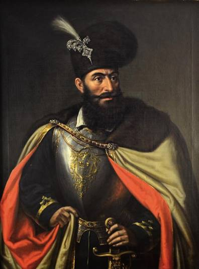
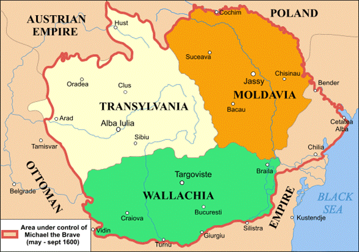
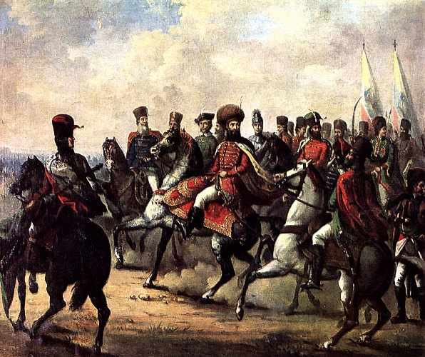
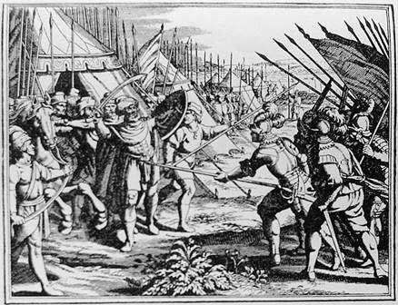

Unirea de
la 1600
Conturarea mitului Mihai
Viteazul ilustreazã mai bine ca oricare alt model istoric mutațiile
petrecute în conștiința româneascã. Domnitorul care a reușit sã
stãpâneascã pentru scurt timp, la 1599-1600, cele trei țãri reunite, trei veacuri
mai târziu, în România modernã, începe a fi receptat ca unificator abia spre
mijlocul secolului al XIX-lea. O asemenea interpretare lipsește cu desãvârșire
în istoriografia cronicãreascã a veacului al XVII-lea și chiar mai târziu,
spre 1800, la Școala Ardeleanã.
Realitatea istoricã este
mult mai nuanțatã decât cea cunoscutã de publicul larg. Pe scurt, Mihai
Viteazul ar putea fi caracterizat în felul urmãtor (a se reține cã nu a
purtat titlul de "Domn" decât în Țara Româneascã):

· 1593-1599
este Domn al Țãrii Românești;
· Între
octombrie 1599 și iunie 1600 a fost Stãpânitor al Țãrii Românești
și al Ardealului;
· În
perioada iunie 1600 - septembrie 1600 a fost Stãpânitor al Țãrii Românești,
al Ardealului și Moldovei, adunate împreunã sub "unirea personalã"
a lui Mihai; în cazul Moldovei îl înscãuneazã de fapt pe fiul sãu;
· Între
septembrie 1600 - noiembrie 1600 a fost Domn al Țãrii Românești;
· Între
februarie 1601- august 1601 a fost comandant militar în slujba Imperiului
Habsburgic.
Deși istoria
asociatã cu Mihai Viteazul este cunoscutã publicului larg drept
"unire", termenul este dus prea departe. În realitate, toate cele
trei țãri își pãstreazã instituțiile de conducere de dinainte -
Dieta (Transilvania) și sfaturile boierești în țãrile
extracarpatice, își pãstreazã legile, cutumele și procedurile
fiecãreia în vigoare. Mihai nu "unificã" nici armatele.
Mihai Viteazul (n. 1558,
Floci, Țara Româneascã – d. 9/19 august 1601, Câmpia Turzii, Principatul
Transilvaniei) a fost domnul Țãrii Românești între 1593-1600. Pentru
o perioadã (în 1600), a fost conducãtor de facto al celor trei mari țãri
medievale care formeazã România de astãzi: Țara Româneascã, Transilvania și
Moldova. Înainte de a ajunge pe tron, ca boier, a deținut dregãtoriile de
bãnișor de Strehaia, stolnic domnesc și ban al Craiovei.
Figura lui Mihai Viteazul
a ajuns în panteonul național românesc dupã ce a fost recuperatã de
istoriografia româneascã a secolului al XIX-lea, un rol important jucându-l
opul Românii supt Mihai-Voievod Viteazul al lui Nicolae Bãlcescu. Astfel
voievodul a ajuns un precursor important al unificãrii românilor, care avea sã
se realizeze în secolul al XX-lea.
Transilvania
Teritoriile
aflate la 1600 sub domnia lui Mihai Viteazul

Domnia lui Ieremia
Movilã, devotat politicii poloneze (acesta încheiase un tratat de vasalitate cu
Polonia), însemnase practic îndepãrtarea Moldovei de Sfânta Alianþã.
În Transilvania, Sigismund renunþa la tron în
favoarea vãrului sãu, cardinalul Andrei Báthory (un aderent al politicii
cancelarului polon Zamoisky).
Ieremia Movilã ºi cancelarul Zamoisky intenþionau sã aºeze în scaunul Þãrii Româneºti pe Simion Movilã,
fratele domnului Moldovei, ceea ce ameninþa existenþa Alianþei. În aceste circumstanþe, în iulie 1599 Mihai Viteazul a trimis o solie
la Praga pentru a cere încuviinþarea împãratului
Rudolf al II-lea pentru intervenþia în Transilvania,
cu intenþia de a sparge cercul de adversitãþi
ce-l împresura. Primind un rãspuns favorabil, la sfârºitul
aceluiaºi an, intrã în Transilvania prin pasul Buzãu
cu o armatã formatã din români ºi mercenari de
diferite etnii: unguri ºi secui din Ardeal, polonezi,
sârbi etc. Dupã victoria asupra lui Andrei Báthory (Bãtãlia de la ªelimbãr, 18/28 octombrie 1599) îºi
face intrarea triumfãtoare la Alba Iulia pe 1 noiembrie 1599 primind cheile fortãreþei de la episcopul Demetrius Napragy.
Andrei Báthory a fost ucis la scurt timp dupã bãtãlia de la ªelimbãr,
având vârsta de 28 de ani. Mihai a primit cu durere vestea morþii
lui Báthory, el puse sã se îngroape dupã cuviinþã
capul lui Andrei, în mausoleul pe care acesta însuºi
îl pregãtise în Alba Iulia, ºi urmã chiar sicriul, þinând în mânã lumânarea, dupã obiceiul românesc.
Dupã biruinþa
de la ªelimbãr, Mihai a înfiinþat
(sau reînfiinþat, între specialiºti
se poartã încã discuþii) mitropolia ortodoxã de la
Alba Iulia , un prim pas spre recunoaºterea oficialã
a confesiunii ortodoxe.
Chiar dacã a fost
recunoscut de Dietã doar ca guvernator imperial, Mihai a fost conducãtorul de
facto al Transilvaniei, Dieta recunoscându-i titlul de locum
tenens al Transilvaniei, aºa
cum se specificã în diplomele latine. În actele slavone însã, el se intituleazã
domn al Þãrii Româneºti ºi Ardealului. (Mihai Bãrbulescu º.a.,
2002, p. 190). Mihai nu a modificat sistemul constituþional
al Transilvaniei: nu a intervenit în reprezentarea naþiunilor
politice, nobilimea maghiarã, saºii ºi secuii. A intervenit însã, potrivit organizãrii constituþionale, în alcãtuirea Consiliului principatului
transilvãnean, unde a introdus doi din boierii sãi români, aºezând
în cetãþi pârcãlabi proprii, dar pãstrând vechii funcþionari. Dieta Transilvaniei a fost profund nemulþumitã de acordarea unor donaþii
de domenii (sate) fãcute boierilor munteni, în detrimentul nobilimii maghiare.
Protestele Dietei ºi rapoartele nunþiului
papal Malaspina dovedesc tendinþa
lui Mihai de a structura o proprie bazã socialã românã stãpânirii sale. Mihai a
avut raporturi bune cu secuii, cãrora le-a confirmat vechile drepturi ºi privilegii (ce fuseserã rãpite de principii Báthory), de
asemenea cu saºii, cãrora le-a satisfãcut cererile ,
manifestând toleranþã faþã
de luteranism. Mihai a luat mãsuri în Transilvania în favoarea iobagilor români
ºi a preoþilor români. În
beneficiul preoþilor, Mihai a obþinut
scutirea lor de robotã.
Nunþiul Malaspina sus-amintit recomanda împãratului habsburgic , în
rapoartele sale, respectarea legilor, instituþiilor ºi obiceiurilor provinciei. Acesta sugera ca principatul
transilvãnean sã nu fie administrat dupã obiceiurile valahe - valachico more - ci numai dupã obiceiurile respectate pânã
atunci de principii ardeleni.
Moldova
Sigiliul cu stema lui
Mihai Viteazul din 1600.
În primãvara anului 1600, Mihai ºi-a dat seama de pericolul pe care îl reprezenta influenþa în Moldova a Regatului Poloniei, care refuzase sã
facã parte din „Liga Sfântã” ºi era un aliat tacit al
Imperiului Otoman. Polonezii, a cãror politicã externã era practic sub
controlul marelui hatman Jan Zamoyski, nu numai cã îl
înscãunaserã în 1595 pe protejatul lor, Ieremia Movilã, ca Domn al Moldovei (scoþând astfel aceastã þarã din
Liga Sfântã) ºi îl susþinuserã
pe Andrei Báthory în Transilvania, dar unelteau sã îl detroneze pe Mihai ºi sã-l punã în locul lui, în Þara
Româneascã, pe Simion Movilã (fratele lui Ieremia). Ceea ce a determinat însã decisiv
hotãrârea lui Mihai de a declanºa o campanie
preventivã în Moldova, au fost pregãtirile fãcute cãtre Sigismund Báthory,
aflat de la începutul anului 1600 la Suceava, pentru recucerirea Transilvaniei,
cu sprijinul lui Jan Zamoyski ºi
al lui Ieremia Movilã.[27]
Expediþia
a început la 14/24 aprilie 1600, când Mihai Viteazul pleacã din Alba Iulia,
lãsând în locul sãu pe banul Mihalcea, acesta ºi
Farkas Korniº fiind delegaþi
sã trateze cu comisarii imperiali. El se îndreaptã spre Miercurea Sibiului,
dupã care trece pe lângã Fãgãraº (17/27-20/30
aprilie), Codlea (21 aprilie/1 mai), Braºov (22
aprilie/2 mai) ºi ajunge la Prejmer (23 aprilie/3
mai).[28]
La 1 mai 1600 Mihai îºi aºezã tabãra la Prejmer.
Acolo fãcu cunoscut ostaºilor sãi cã vor trece Carpaþii pentru a-l alunga pe Ieremia Movilã de pe tronul
Moldovei. La 6 mai Mihai în fruntea oastei sale trece
munþii, dar nu pe drumul obiºnuit,
unde ºtia cã îl aºteaptã duºmanul, ci urcându-se pe munþii
cei mai grei. În acea vreme armata sa a avut mult de suferit, mai cu seamã din
lipsa proviziilor care nu se gãseau nici acolo ºi
nici în pãrþile Moldovei, care au fost pustiite de
Ieremia Movilã. Caii nu au avut pãºune iar ostaºii au fost siliþi sã mãnânce
foi din copaci.[29]
La 26 aprilie/6 mai 1600,
trupele lui Mihai Viteazul pãtrund în Moldova prin trei sau chiar patru puncte:
pe la Focºani (cu Nicolae Pãtraºcu),
prin pasul Oituz - valea Trotuºului, coloana centralã
(avangarda acesteia ajunsese la Trotuº încã de vineri
25 aprilie/ 5 mai), care se îndreaptã spre Bacãu, urmatã dupã 28 aprilie/8 mai
de Mihai Viteazul, prin pasul Rodna-Cucureasa, urmând
drumul spre Suceava, ºi, posibil, pe valea Ceremuºului spre nord. Toate coloanele susþin
lupte cu forþele moldo-polone
care se retrãgeau spre nord.[30]
Mihai îl învinge pe
Ieremia Movilã la Bacãu, ºi realizeazã astfel, prima
unire a þãrilor române. Ieremia Movilã a fugit,
gãsind refugiu, împreunã cu familia sa la Hotin. La 1 iunie 1600, Mihai se afla
la Iaºi ºi boierii
moldoveni au fost puºi sã jure în numele cârmuitorului
celui nou. Lãsând pentru stãpânirea Moldovei un Sfat de boieri, alcãtuit din
Udrea, Andronic Cantacuzino ºi spãtarul Negre, el se
întoarse în Transilvania (N. Iorga, 1992, op. cit. ref.9).
Mihai a cucerit Moldova,
invocând ca motiv alianþa lui Ieremia Movilã cu
turcii ºi tãtarii. El a cerut împãratului recunoaºterea stãpânirii sale in perpetuum asupra
Ardealului, Moldovei ºi Þãrii
Româneºti.
Titulatura folositã de
voievod (într-un document din 6 iulie 1600) era: „Domn al Þãrii
Româneºti ºi Ardealului ºi a toatã þara Moldovei”. La
recomandarea marii boierimi, Mihai a numit un domn în Moldova, subordonat sieºi.
Sfârºitul domniei
Destrãmarea
Unirii
Oastea
lui Mihai Viteazul – picturã de Gheorghe Tattarescu
Contextul internaþional
a fost nefavorabil lui Mihai. Puterile vecine vedeau în ambiþiile
sale politice o contradicþie cu interesele proprii de
dominanþã. Habsburgii îºi
vedeau ameninþate planurile de menþinere
a Transilvaniei în sfera lor de influenþã, Polonia nu
dorea pierderea controlului asupra Moldovei, iar Imperiul Otoman nu accepta
ideea renunþãrii la Þara
Româneascã. Mai mult chiar, uniunea personalã a lui Mihai reprezenta o formulã
puternicã, capabilã sã schimbe raportul de forþe din
regiune.
Existau însã ºi conflicte interne, cauzate de insubordonarea nobililor
maghiari din Transilvania care nu acceptau mãsurile impuse de noul domn. De
asemenea, saºii au rãmas ostili lui Mihai, în urma
jafurilor întreprinse de armatele sale în oraºele ºi satele lor (Ghimbav, Codlea, Merghindeal, Cincu, ªura Micã, Cristian, Câlnic etc.).
Mihai nu reuºeste sã înfrângã revolta nobililor maghiari
transilvãneni, sprijiniþi de generalul Basta care l-a
învins în Bãtãlia de la Mirãslãu (18/28 septembrie 1600) ºi
astfel pierde Ardealul. În scurt timp Moldova va reintra în posesia Movileºtilor aserviþi intereselor
polone. Polonii au pãtruns în Moldova cu cancelarul ºi
marele hatman Zamoisky, restaurând astfel dinastia
Movilã.
Mihai încearcã sã reziste
atacului polon asupra Þãrii Româneºti,
însã ºi pe acest tron se va urca un membru al
familiei Movileºtilor, Simion Movilã.
Aºadar,
înfãptuirea unirii manu militari nu a durat, creaþia politicã a lui Mihai s-a prãbuºit
ca efect al intereselor proprii ale Habsburgilor, Poloniei ºi
Imperiului Otoman.
Moartea lui Mihai
Viteazul - Gurãslãu (1601)
Forþat
sã ia calea pribegiei, Mihai se îndreaptã spre Praga pentru solicita ajutor de
la împãratul Rudolf al II-lea. Cãlãtoria a fost lungã ºi
anevoioasã (voievodul ºi însoþitorii
sãi fiind atacaþi de mai multe ori, mai ales în
Transilvania), trecând prin Deva, Lipova, Oradea, Debreþin,
Tokaj, Pojon ºi Viena.[32] A ajuns la Viena, împreunã cu cei 40 de însoþitori care îi mai rãmãseserã, la 2 ianuarie 1601, unde
a fost primit de arhiducele Matthias (viitorul împãrat Matia I), care i-a
înlesnit primirea la Curtea Imperialã de la Praga.[33] Mihai Viteazul a ajuns
la Praga pe 23 februarie 1601, fiind primit în audienþã
la împãrat pe 14 martie.
Mihai cere sprijinul
împãratului Rudolf al II-lea, care, în contextul reînscãunãrii lui Sigismund Bathory pe tronul Transilvaniei, acceptã sã-l susþinã pe voievodul român.
Împreunã cu generalul
Basta, Mihai porneºte campania de recucerire a
teritoriilor româneºti. Prin victoria de la Guruslãu
(3 august 1601), voievodul valah îl îndepãrteazã pe Bathory
din Transilvania. Continuã prin a recupera Þara
Româneascã gonindu-l pe Simion Movilã de pe tron. În aceste condiþii,
se întrezãreau perspectivele unei noi uniri româneºti,
perspectivã ce nu convenea împãratului habsburgic, Rudolf al II-lea. Se pune la
cale înlãturarea fizicã a domnitorului român, ºi la
9/19 august 1601, la 3 km sud de Turda, Mihai Viteazul este ucis de un detaºament de mercenari în frunte cu ofiþerul
valon Iacob (Jacques) de Beauri, trimis de generalul
Giorgio Basta.
Capul sãu este luat de
Turturea paharnicul, unul dintre cãpitanii voievodului,[37] adus în Þara Româneascã ºi înmormântat de
Radu Buzescu la Mãnãstirea Dealu, lângã osemintele pãrintelui sãu Pãtraºcu-Vodã.
Pe lespedea sa de piatrã
de la Mãnãstirea Dealu stã scris: „Aici zace cinstitul ºi
rãposatul capu al creºtinului
Mihail, Marele Voievod, ce a fost domn al Þãrii Româneºti ºi Ardealului ºi Moldovei”.
Miron Costin a scris în
cronica sa urmãtorul comentariu, dupã ce a relatat uciderea lui Mihai: „ªi aºea s-au plãtitu
lui Mihai Vodã slujbele ce-au fãcutu nemþilor.”[38] Abia generaþia paºoptistã, angajatã în lupta pentru crearea statului naþional român, îl va recunoaºte
pe Mihai Viteazul ca pe un ilustru predecesor (Florin Constantiniu, op. cit).